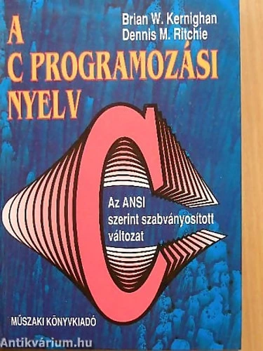

Programozás alapjai
Tantárgy feladata és célja:
A tárgy egyik célja, hogy kialakítsa a hallgatókban a komplex számítási problémák analizálásának és szisztematikus leírásának képességét. Ehhez megtanulják a számítási algoritmusok építőelemeit és leírási módszereit. A tárgy másik célja az ANSI szabvány szerinti C programozási nyelv elsajátítása. Az algoritmusokat ezen a nyelven implementáljuk.
Tárgy részletes tematikája:
- A számítógép és programozása. Programozási nyelvek. A programkészítés menete. Algoritmusok és leírási módszereik. Számlálás és összegzés alapalgoritmusok.
- A C programozási nyelv jellemzői és szintaktikai egységei. Eldöntés a kiválasztás alapalgoritmusok.
- Operátorok és kifejezések, típuskonverzió a C nyelvben. A C program szerkezete. Integrátl programfejelesztő eszközök. Egyszerű ki- és bemeneti függvények. Szélsőérték kiválasztás alapalgoritmus.
- A C nyelv utasításai. Vezérlési szerkezetek C nyelvű implementációja. Keresés alapalgoritmus.
- Egydimenziós tömbök és mutatók. Tömbi algoritmusok. Véletlenszám generálás. Sztringek és kezelő függvényeik.
- Függvények, programtervezési alapelvek.
- Struktúrák, struktúra tömbök. Típusdefiníció. Dinamikus memóriakezelés. Önhivatkozó struktúrák.
- Tárolási osztályok. Moduláris programozás. Filekezelés. Saját függvénykönyvtár és header állomány készítése.
- Rekurzió, rendezés.
- Kétdimenziós tömbök, mutató tömbök létrehozása és algoritmusai. Dinamikus memóriakezelés. Menü készítése. Függvénypointer.
- A main függvény paraméterei és visszatérési értéke. A C fordító működése, az előfeldolgozó feladatai. Kiválogatás és szétválogatás alapalgoritmusok.
- A C99/C11 szabvány új elemei. Kódolási szabvány. SE alapelvek. Unió, metszet, különbség, összefuttatás alapalgoritmusok.

Irodalom: Brian W. Kernighan, Dennis M. Ritchie: A C programozási nyelv, Az ANSI szerint szabványosított változat.